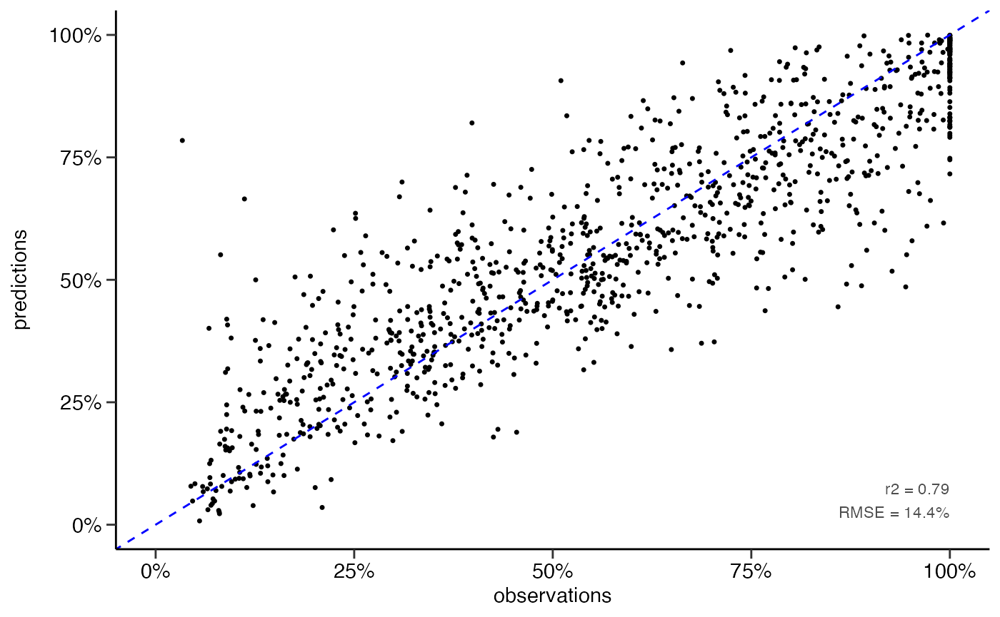

xgboost
Mathias Riechel, Michael Rustler
Source:vignettes/prediction_xgboost.Rmd
prediction_xgboost.RmdInput Dataset
library(dwc.wells)
library(tidymodels)
#> ── Attaching packages ────────────────────────────────────── tidymodels 0.2.0 ──
#> ✔ broom 0.7.12 ✔ recipes 0.2.0
#> ✔ dials 0.1.0 ✔ rsample 0.1.1
#> ✔ dplyr 1.0.8 ✔ tibble 3.1.6
#> ✔ ggplot2 3.3.5 ✔ tidyr 1.2.0
#> ✔ infer 1.0.0 ✔ tune 0.2.0
#> ✔ modeldata 0.1.1 ✔ workflows 0.2.6
#> ✔ parsnip 0.2.1 ✔ workflowsets 0.2.1
#> ✔ purrr 0.3.4 ✔ yardstick 0.0.9
#> ── Conflicts ───────────────────────────────────────── tidymodels_conflicts() ──
#> ✖ purrr::discard() masks scales::discard()
#> ✖ dplyr::filter() masks stats::filter()
#> ✖ dplyr::lag() masks stats::lag()
#> ✖ recipes::step() masks stats::step()
#> • Dig deeper into tidy modeling with R at https://www.tmwr.org
df <- dwc.wells::model_data_reduced
str(df)
#> 'data.frame': 6308 obs. of 27 variables:
#> $ Qs_rel : num 100 97.8 75.1 78.5 52.2 ...
#> $ well_id : int 162 162 162 162 162 162 162 162 162 162 ...
#> $ well_age_years : num 0 23.2 29.3 29.5 35 ...
#> $ construction_year : num 1970 1970 1970 1970 1970 1970 1970 1970 1970 1970 ...
#> $ screen_material : Factor w/ 6 levels "Stahl","Edelstahl",..: 6 6 6 6 6 6 6 6 6 6 ...
#> $ diameter : num 300 300 300 300 300 300 300 300 300 300 ...
#> $ drilling_method : Factor w/ 6 levels "Trockenbohrung",..: 6 6 6 6 6 6 6 6 6 6 ...
#> $ admissible_discharge : num 176 176 176 176 176 176 176 176 176 176 ...
#> $ operational_start.Qs : num 39.1 39.1 39.1 39.1 39.1 ...
#> $ aquifer_coverage : Factor w/ 5 levels "unbedeckt","bedeckt",..: 2 2 2 2 2 2 2 2 2 2 ...
#> $ W_static.sd : num 0.766 0.766 0.766 0.766 0.766 ...
#> $ surface_water.distance: Factor w/ 8 levels "0-25","25-50",..: 1 1 1 1 1 1 1 1 1 1 ...
#> $ n_rehab : int 0 1 1 2 2 3 3 4 4 4 ...
#> $ time_since_rehab_years: num 0 0.0411 6.193 0.0794 5.5524 ...
#> $ volume_m3_d.mean : num 1203 1203 1203 1203 1203 ...
#> $ volume_m3_d.cv : num 1.29 1.29 1.29 1.29 1.29 ...
#> $ quality.EC : num 824 824 824 824 824 ...
#> $ quality.DO : num 0.235 0.235 0.235 0.235 0.235 0.235 0.235 0.235 0.235 0.235 ...
#> $ quality.Temp : num 11.7 11.7 11.7 11.7 11.7 11.7 11.7 11.7 11.7 11.7 ...
#> $ quality.pH : num 7.4 7.4 7.4 7.4 7.4 7.4 7.4 7.4 7.4 7.4 ...
#> $ quality.Redox : num 86 86 86 86 86 86 86 86 86 86 ...
#> $ quality.Fe_tot : num 1.9 1.9 1.9 1.9 1.9 1.9 1.9 1.9 1.9 1.9 ...
#> $ quality.Mn : num 0.24 0.24 0.24 0.24 0.24 0.24 0.24 0.24 0.24 0.24 ...
#> $ quality.NO3 : num 0.1 0.1 0.1 0.1 0.1 0.1 0.1 0.1 0.1 0.1 ...
#> $ quality.PO4 : num 0.966 0.966 0.966 0.966 0.966 ...
#> $ quality.SO4 : num 94 94 94 94 94 94 94 94 94 94 ...
#> $ quality.TSS : num 4.1 4.1 4.1 4.1 4.1 4.1 4.1 4.1 4.1 4.1 ...Resampling
resampling <- "random"
#resampling <- "by_well"
set.seed(1)
if (resampling == "random") {
# for regression
data_split <- rsample::initial_split(df %>% dplyr::select(-well_id),
prop = 0.8,
strata = Qs_rel)
df_training <- data_split %>% rsample::training()
df_test <- data_split %>% rsample::testing()
# for classification
df_training_cat <- df_training %>%
dplyr::mutate(Qs_rel = dwc.wells::classify_Qs(Qs_rel))
df_test_cat <- df_test %>%
dplyr::mutate(Qs_rel = dwc.wells::classify_Qs(Qs_rel))
data_split_cat <- rsample::initial_split(
df %>%
dplyr::mutate(Qs_rel = dwc.wells::classify_Qs(Qs_rel)) %>%
dplyr::select(-well_id),
prop = 0.8,
strata = Qs_rel
)
}
# version 2: splitting per well ids
if (resampling == "by_well") {
well_ids <- unique(df$well_id)
train_ids <- sample(well_ids, 0.8 * length(well_ids))
test_ids <- setdiff(well_ids, train_ids)
df_training <- df %>%
dplyr::filter(well_id %in% train_ids) %>%
dplyr::select(-well_id)
df_test <- df %>%
dplyr::filter(well_id %in% test_ids) %>%
dplyr::select(-well_id)
df_training_cat <- df_training %>%
dplyr::mutate(Qs_rel = dwc.wells::classify_Qs(Qs_rel))
df_test_cat <- df_test %>%
dplyr::mutate(Qs_rel = dwc.wells::classify_Qs(Qs_rel))
}Regression
Hyperparameter Tuning
# Hyperparameter tuning --------------------------------------------------------
# specify model
xgb_model <- boost_tree(
trees = 500,
tree_depth = tune(), min_n = tune(),
loss_reduction = tune(), ## first three: model complexity
sample_size = tune(), mtry = tune(), ## randomness
learn_rate = tune(), ## step size
) %>%
set_engine("xgboost") %>%
set_mode("regression")
# set up workflow
xgb_wf <- workflow() %>%
add_formula(Qs_rel ~ .) %>%
add_model(xgb_model)
# hyperparameter sampling v1
xgb_grid <- grid_random(tree_depth(),
min_n(),
loss_reduction(),
sample_size = sample_prop(),
finalize(mtry(), df_training),
learn_rate(range = c(0.01, 0.1), trans = NULL),
size = 1000)
# hyperparameter sampling v2
xgb_grid <- grid_latin_hypercube(
tree_depth(),
min_n(),
loss_reduction(),
sample_size = sample_prop(),
finalize(mtry(), df_training),
learn_rate(),
size = 500
)
# define cross validation procedure
cv_folds <- vfold_cv(df_training, v = 5)
# set up random grid with 20 combinations for first screening
doParallel::registerDoParallel()
# test different hyperparameters via cross validation on training data
set.seed(234)
xgb_tuning <- tune_grid(
xgb_wf,
resamples = cv_folds,
grid = xgb_grid,
control = control_grid(save_pred = TRUE)
)
# get assessment metrics
metrics <- xgb_tuning %>% collect_metrics()
save_data(metrics, getwd(), "metrics_tuning_xgb_random_resampling")
# visualise results
metrics %>%
#filter(learn_rate > 0.01) %>%
filter(.metric == "rmse") %>%
select(mean, min_n, mtry, tree_depth, learn_rate, loss_reduction, sample_size) %>%
pivot_longer(c(min_n, mtry, tree_depth, learn_rate, loss_reduction, sample_size),
values_to = "value",
names_to = "parameter"
) %>%
ggplot(aes(value, mean, color = parameter)) +
geom_point(show.legend = FALSE, size = 0.5) +
facet_wrap(~parameter, scales = "free") +
labs(x = NULL, y = "RMSE [%]") +
sema.berlin.utils::my_theme()
ggsave("xgb_regression_hyperparameter_tuning_plot_random_resampling_1000_v2.png", width = 8, height = 4, dpi = 600)
# after example from https://juliasilge.com/blog/xgboost-tune-volleyball/
}Best-Fit Model
# Specify model ----------------------------------------------------------------
xgb_model <- boost_tree(mtry = 6,
min_n = 10,
trees = 500,
tree_depth = 7,
loss_reduction = 10,
learn_rate = 0.1,
sample_size = 0.7) %>%
set_engine("xgboost", nthreads = parallel::detectCores()) %>%
set_mode("regression")
# Model training and assessment (regression) -----------------------------------
# Train model
set.seed(26)
xgb_fit <- xgb_model %>% fit(Qs_rel ~ ., data = df_training)
#> [16:29:20] WARNING: amalgamation/../src/learner.cc:576:
#> Parameters: { "nthreads" } might not be used.
#>
#> This could be a false alarm, with some parameters getting used by language bindings but
#> then being mistakenly passed down to XGBoost core, or some parameter actually being used
#> but getting flagged wrongly here. Please open an issue if you find any such cases.
#usethis::use_data(xgb_fit, compress = "xz", overwrite = TRUE)
# Make predictions
predictions <- predict(xgb_fit, df_test)
# Evaluate model performance
df_pred <- df_test %>% select(Qs_rel) %>% bind_cols(predictions)
rmse(df_pred, truth = Qs_rel, estimate = .pred)
#> # A tibble: 1 × 3
#> .metric .estimator .estimate
#> <chr> <chr> <dbl>
#> 1 rmse standard 14.4
rsq(df_pred, truth = Qs_rel, estimate = .pred)
#> # A tibble: 1 × 3
#> .metric .estimator .estimate
#> <chr> <chr> <dbl>
#> 1 rsq standard 0.795
# scatter plot
scatterplot(df_pred, lines_80perc = FALSE, alpha = 1, pointsize = 0.9)
#> Warning: Removed 218 rows containing missing values (geom_point).
ggsave("scatterplot_xgb_numeric.png", dpi = 600, width = 3.5, height = 3)
#> Warning: Removed 218 rows containing missing values (geom_point).Classification Performance
# classification performance ---------------------------------------------------
# classify Qs data
df_pred <- df_pred %>%
mutate(Qs_rel_class = classify_Qs(Qs_rel),
.pred_class = classify_Qs(.pred))
# confusion matrix
matrix <- conf_mat(df_pred, truth = Qs_rel_class, estimate = .pred_class)
# performance metrics
metrics <- matrix %>% summary()
save_data(matrix, getwd(), "xgb_numeric_to_class_matrix_split80", formats = "RData")
save_data(metrics, getwd(), "xgb_numeric_to_class_metrics_split80")